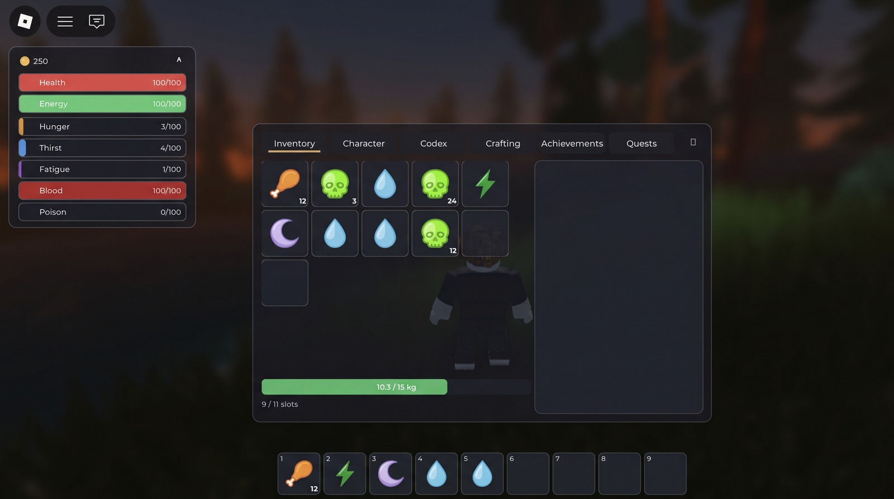

Survival stats & HUD
Health, energy, hunger, thirst, fatigue, blood, poison — ticking, draining, biting back. A clean, restyleable HUD drives only the data.
A batteries-included, creator-extensible framework. Survival stats, inventory, gathering, crafting, combat, mobs & AI — wired together, restyleable, and authorable without code. If you know Roblox Studio, you can build a survival game.
Free & open source (MIT) · drop-in .rbxm or Wally
The core survival loop ships working — stats, inventory, gather, craft, fight — not a pile of parts to wire.
A Studio admin plugin creates items, weapons, ammo and mobs — with full stats — and zero scripting.
UI is real, restyleable Instances driven by attributes. Override any default; nothing is locked.
Hits, harvests and crafts are validated on the server. Content-free by design — you bring the game.
Each system is configurable, hook-extensible, and authorable as tagged Instances or no-code.
Health, energy, hunger, thirst, fatigue, blood, poison — ticking, draining, biting back. A clean, restyleable HUD drives only the data.
Slots + carry-weight, a 9-slot hotbar, equipment, and hand crafting in a tabbed menu — server-authoritative, drag-and-drop.
Tag any mesh Gatherable: hold-E or tool-swing, per-hit yields, reaction hooks (a reed sways, a tree fells and leaves a stump).
Click to swing; or aim a bow, draw for power, and loose arrows that arc under real weight. One server-validated kill-event schema.
A shared FSM substrate: hostile mobs chase & attack, passive animals flee. Behavior is data — faction picks the profile.
Create items, weapons, ammo and mobs from a Studio form — damage, range, arrow curve, weight, aggro, leash — and drop them into the world.
The whole UI suite runs out of the box — restyle it, or keep the clean defaults.

Drop it into ReplicatedStorage, register your content, and call start().
Grab the drop-in model from the latest release, or add it with Wally:
# wally.toml
[dependencies]
SurvivorCore = "temujincalidius/survivorcore@0.5.0"…or drop SurvivorCore.rbxm into ReplicatedStorage.
local SurvivorCore = require(ReplicatedStorage.SurvivorCore)
-- register content (or author it no-code in the admin plugin)
SurvivorCore.Items.register({ id = "berry", name = "Wild Berries", stack = 20 })
SurvivorCore.Mobs.register({ id = "husk", faction = "hostile", health = 60 })
SurvivorCore.start() -- boots stats, inventory, gathering, crafting, combat, mobs…The HUD loader calls startClient() for you. That's it.